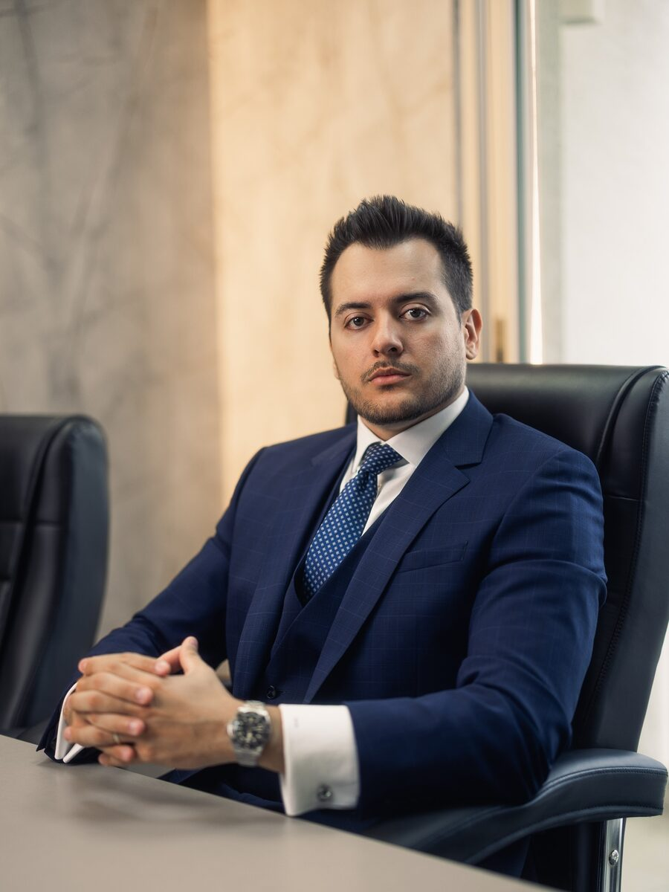
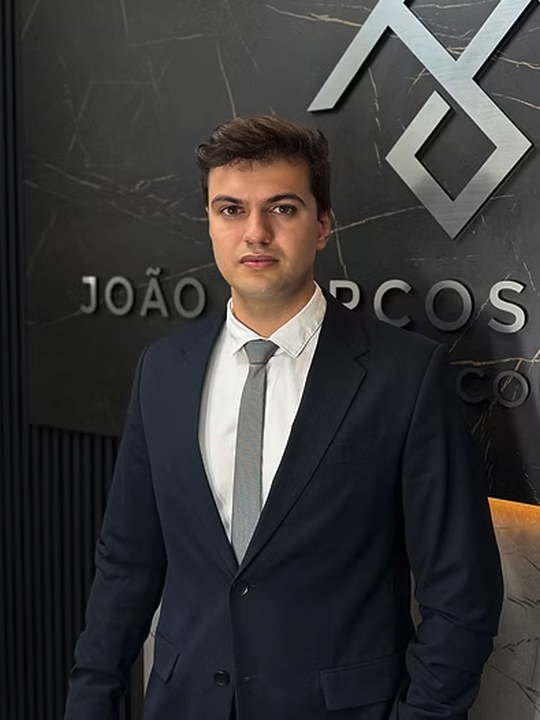

Un equipo dedicado exclusivamente al derecho penal y tributario, liderado por João Marcos A. Batista.

OAB/SP 454.179
Abogado penalista desde 2014. Comenzó su carrera en el Fuero Criminal de Barra Funda y en la Fiscalía de São Paulo, donde conoció desde adentro la rutina de la acusación — experiencia que hoy aplica a la defensa, con énfasis en delitos comunes, delitos económicos y jurado.
Posgrados en Derecho Penal Económico (FGV/SP) y en Finanzas, Inversiones y Banca (PUC/RS). Consejero de Prerrogativas del Colegio de Abogados de São Paulo, miembro del IDDD, asociado al IBCCRIM y miembro del Instituto Brasileño de Planificación Tributaria.
El despacho integra la lista de abogados de la Embajada de EE.UU. en Brasil, con actuación en casos penales internacionales desde 2016.
Graduado por FMU/SP, integra el despacho desde 2025, con actuación en materias civil y penal y seguimiento cercano de cada proceso.
Profesionales que cuidan el primer contacto, la organización de la atención y la comunicación entre usted y los abogados.

Responsable de la operación de atención del despacho y del puente entre el cliente y el equipo jurídico, del primer contacto al seguimiento del caso. Graduado en Ingeniería Mecánica por FMU/SP.
Actúa en la primera atención y en la calificación de los casos, garantizando claridad en la comunicación y organización del flujo hasta los abogados responsables.